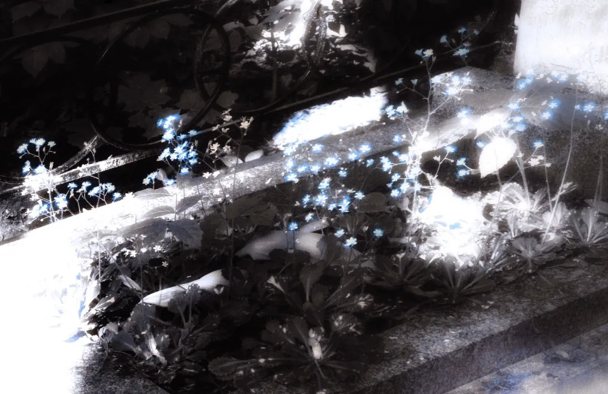
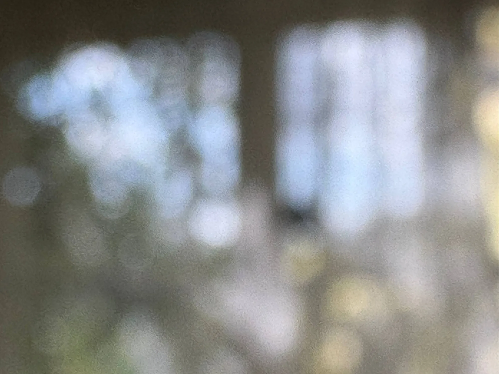
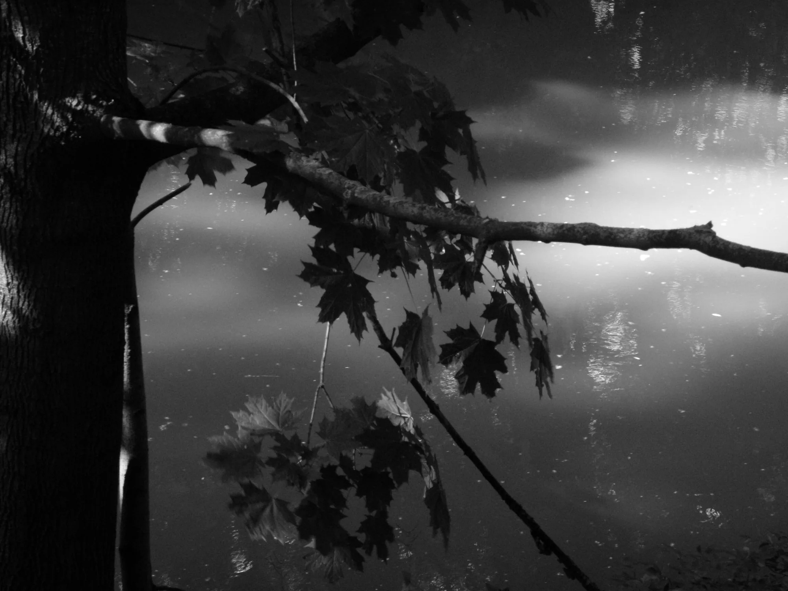
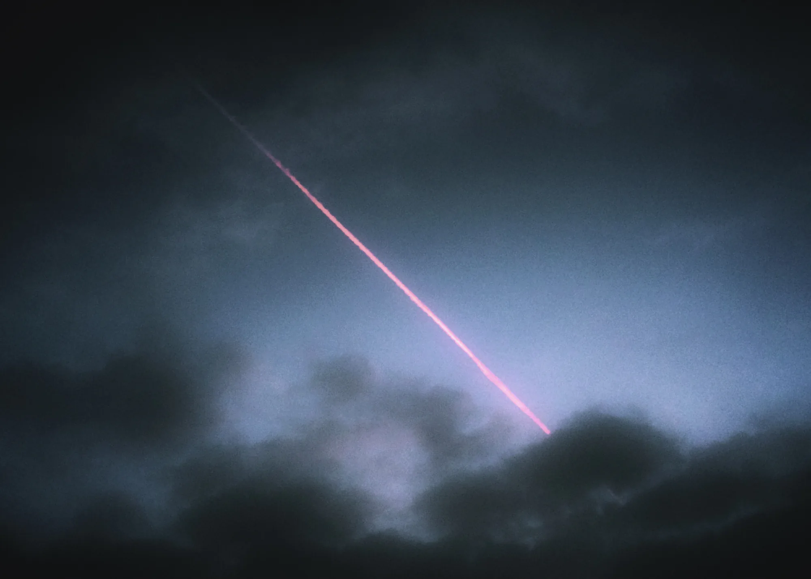

бездна не приходит одна. память всегда остаётся с нами, своими светлыми огоньками подсвечивая жизнь, в которой мы когда-то были уверены. в которой были близкие люди, которых с нами больше нет. их больше никогда не увидишь, не поговоришь с ними, не обнимешь и не скажешь «прости».

свет виднеется, но ничего не проглядывается. туманная пелена падает на глаза, потому что память сильнее реальности. конвейер картинок о прошлом катится-крутится, постоянно показывая то, от чего тело бросает в оцепенение.

всё застыло. смерть, нарисованная природой неизбежно забирает людей к себе. в России люди умирают от нездорового образа жизни, братоубийственной войны, своих глупых выборов. смерть неумолима.

это соприкосновение со светом и перерождение. тернии срывают покровы старых туч — и мы можем лететь выше, лишь только когда встретились и прошли сквозь боль прошлого. раскаявшись и полюбив. снова и снова.